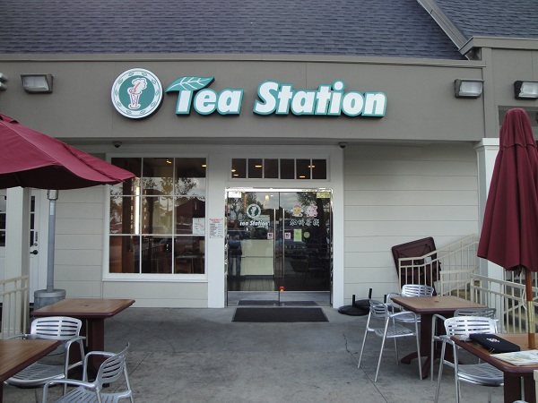
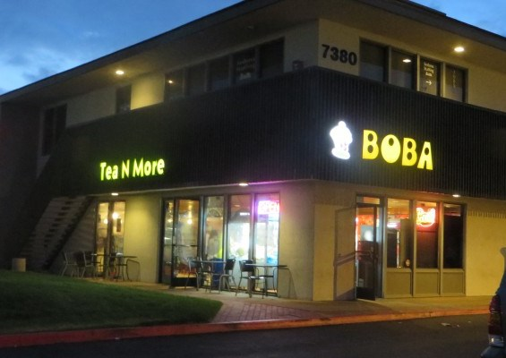
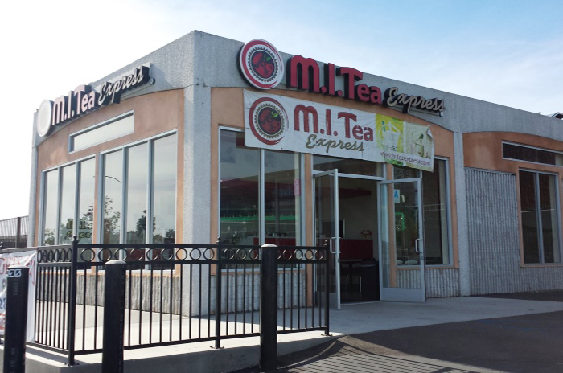

Featured Flavor
Honeydew Milk Tea
This fruity and creamy milk tea flavor is this month’s featured flavor! This flavor can come hot or iced. The hot version is perfect for the month of December. Don’t let the green color detract you from trying this tasty drink. The green color comes from the actual honeydew fruit. So you’re only drinking freshly blended honeydew fruit mixed with milk and tea. Add in some boba and your drink is perfect!Our Picks

Tea Station
Tea Station gives you more options with your milk tea. You can choose to have your milk tea hot or iced, with or without boba, and you can even choose your sugar level. They have 5 different sugar levels to choose from: normal amount of sugar, 3/4 sugar, 1/2 sugar, 1/4 sugar, or no sugar. That’s 5 more options than most places offer.

Tea N More
There are lots of things to do at Tea N More’s Clairemont Mesa location. You have photo booths, claw machines, games like jenga, and a bookshelf full of manga. There’s never a dull moment in Tea N More. It’s a great place to spend the day with your friends. Not only is the ambiance nice, Tea N More has daily specials on their milk tea!
